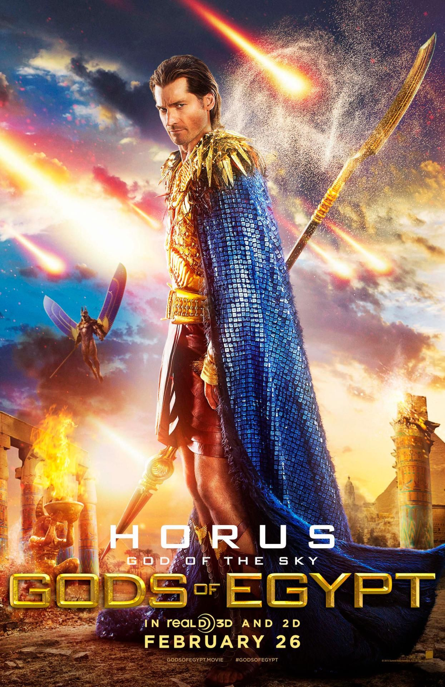

Gods Of Egypts sẽ là nỗ lực tạo ra loạt phim ăn khách tiếp theo của hãng LionGates sau khi loạt Hunger Games kết thúc. Và lựa chọn của họ là vùng đất của các vị thần: Ai Cập
Gods of Egypt (Các vị thần Ai Cập) là một bộ phim thần thoại, phiêu lưu, giả tưởng của đạo diễn Alex Proyas, do Matt Salamanca và Burk Sharpless chấp bút kịch bản, với sự có mặt của các ngôi sao điện ảnh Gerard Butler, Rufus Sewell, Nikolaj Coster-Waldau, Brenton Thwaites và Geoffrey Rush trong vai chính.
Phim kể về một tên trộm bình thường mang tên Bek gia nhập cùng các vị thần trong thần thoại Ai Cập để thực hiện một nhiệm vụ đầy ma thuật. Để thành công, anh cần phải có sự giúp đỡ của vị thần Horus quyền năng và chống lại liên minh của thần bóng tối Set, người đã chiếm đoạt ngôi vương và đẩy Ai Cập từ một quốc gia thanh bình và thịnh vượng trở nên hỗn loạn.
Không chỉ cứu Ai Cập khỏi biển lửa, Horus còn muốn trả thù cho cái chết của người cha Orisis, còn Bek đơn giản muốn giành lại tình yêu của mình. Cuộc hành trình báo thù và phục sinh Osiris là một điển tích thần thoại nổi tiếng của Ai Cập. Các nhân vật phải trải qua vô số thử thách về lòng dũng cảm.
Brenton Thwaites trong vai Bek
Đây là một bộ phim được rất nhiều khán giả chờ đón từ ngôi sao nổi tiếng Gerard Butler sau bom tấn sử thi 300 (2006) phát hành cách đây 10 năm. Cùng điểm lại những chi tiết thú vị liên quan đến bộ phim.
1. Gods of Egypt được thực hiện chủ yếu dựa vào một huyền thoại Ai Cập gọi là The Contendings of Horus and Set. Trong thần thoại Ai Cập, hai vị thần Horus và Set đấu với nhau vì sự cai trị Ai Cập. Thần bóng tối Set được gọi là thần chiến tranh trong thần thoại Ai Cập
Thần Set
2. Gods of Egypt có nhiều diễn viên và nhân viên đoàn phim từng tham gia và Mad Max: Fury Road (2015), số lượng cùng lên tới 200 người. Có nhiều người xuất hiện trong cả hai phim, ví dụ cả hai bộ phim có cùng một cùng một trợ lý đạo diễn (PJ Voeten), giám sát hiệu ứng ( Julian Dimsey), diễn viên đóng thế (Tim Wong và nhiều người khác) và các diễn viên Courtney Eaton, Abby Lee, Bruce Spencer và nhiều người khác.
3. Gods of Egypt đánh dấu là bộ phim đầu tiên được quay với dòng ống kính điện ảnh cao cấp mới Panavision Primo 70. Hầu hết các cảnh trong Gods of Egypt được quay tại sa mạc Úc thay vì sa mạc Sahara như trong phim. Sa mạc Sahara được coi là địa điểm quá nguy hiểm để quay một bộ phim.
4. Nam diễn viên Gerard Butler đã đặt ra một quá trình tập luyện cơ thể rất chi tiết để có thể thể hiện vai thần Set. Anh cho biết trong một cuộc phỏng vấn rằng khi đọc từ 'Thần' trong kịch bản mô tả nhân vật của mình trong Gods of Egypt, anh đã quyết định làm sao cho mình trông giống một vị thần nhất, cho đến khi phim bắt đầu khai máy. Trong khi đó, để thể hiện vai vị thần Horus với thân hình cường tráng trong Gods of Egypt, Nikolaj Coster-Waldau (Game of Thrones) cũng đã nỗ lực tập luyện để giảm 7% lượng mỡ trong cơ thể.
Gerard Butler trong vai thần Set
Nikolaj Coster-Waldau trong vai thần Horus
5. Trang phục và áo giáp của các vị thần trong Gods of Egypt giống như tạo hình của họ trong thần thoại Ai Cập. Trên áo giáp của thần bóng tối Set và thần Horus có những con vật linh thiêng: một con chó rừng và chim ưng. Vương miện trên đầu nữ thần Hathor và thần Thoth là những động vật - một con bò và một con chim khổng lồ ibis. Một số các vị thần mang theo thứ vũ khí được gọi là "vương trượng". Nó được cho là có liên quan đến những nhân vật quyền lực như Thần và Pharaoh ở Ai Cập cổ đại.
Thần Set

Thần Horus
Thần Thoth
Nữ thần Hathor
6. Bộ phim phải đối mặt với những lời chỉ trích nặng nề do dàn diễn viên toàn da trắng và không có bất cứ một diễn viên Ai Cập trong số các nhân vật chính. Tuy nhiên, những lời chỉ trích cũng nhanh chóng vơi dần kể từ khi đạo diễn và nhà sản xuất đều lên tiếng bày tỏ lời xin lỗi một cách chân thành.
7. Có một số thay đổi trong câu chuyện của bộ phim khác với những huyền thoại nổi tiếng của Ai Cập. Trong phim, cả hai con mắt của thần Horus bị xé ra, nhưng một con đã được phục hồi. Còn trong thần thoại, Horus chỉ có một mắt bị rách.
8. Sinh vật khổng lồ giống rắn mà người xem thấy trong trailer Gods of Egypt là một sự hỗn loạn của thần Ai Cập. Sinh vật này được gọi là Apep (hoặc Apophis) và thường được hiển thị như một con rắn trong những bức tranh nghệ thuật Ai Cập.
Gods Of Egypt dự kiến sẽ được khởi chiếu tại Bắc Mỹ từ ngày 26/2/2016, cùng ngày với thị trường Việt Nam